Company insolvent, three conversations in one week.
A small, trusted circle.
A professional foundation of trusted relationships that we build in good times, so we can rely on it when we need it.
Nicolas Moegelin · Berlin, GermanyFinal presentation · Digitale Leute Product Management Bootcamp · 08–11 / 2026
Networking for (senior) Product Professionals that feels more like making friends.
1:1s or 3–5
people per Season
6 months
leave without bad vibes
6 activities
no meeting feeling
A professional foundation of trusted relationships that we build in good times, so we can rely on it when we need it.
As a digital curator, we use offline and online formats deliberately to create encounters that grow into reliable relationships rather than loose contacts.
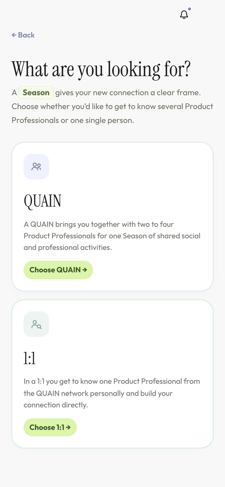
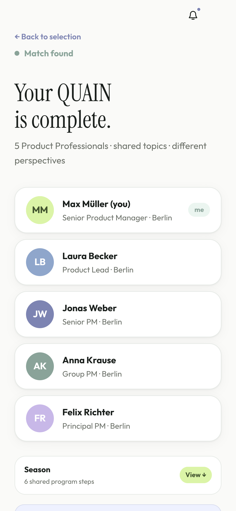
Valuable contacts get lost once shared work or occasions end and are missing later.[3]
“… [after a job or project change] it usually fizzles out after two years at the latest.”Interview 01 · translated[4]
“Yes, how do I tell him now [after a long time without contact] that I’m looking for a job, that’s actually awkward.”Interview 01 · translated[4]
“… I always cancel the [monthly]. Somehow I can’t cancel the series yet, because I don’t dare to.”Interview 02 · translated[5]
“Our project lead is now […] the one I […] go running with, […] that’s how I talk through some things.”Interview 02 · translated[5]
Shared activities connect and make room for professional exchange.
Exchange among peers leads to new perspectives and speeds up professional growth. That is what customers pay for.
“… [after talking to a colleague in the same role] I completely changed my strategy again, […] one I simply hadn’t come up with myself.”Interview 03 · translated[21]
Every Season has a fixed start, six activities and a clear ending that makes leaving easy.[7]
Based on this, QUAIN matches participants and creates activities.
Clickable B2C prototype as the basis for the MVP.[7]
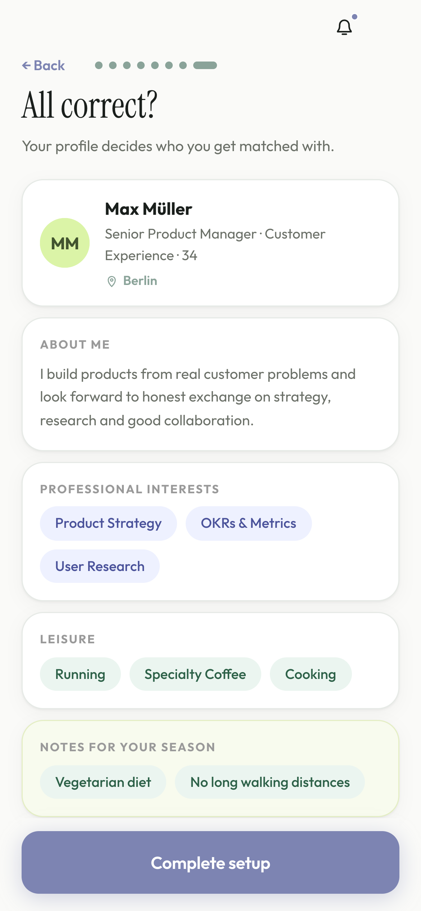
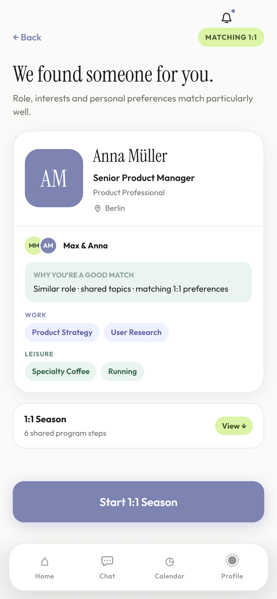
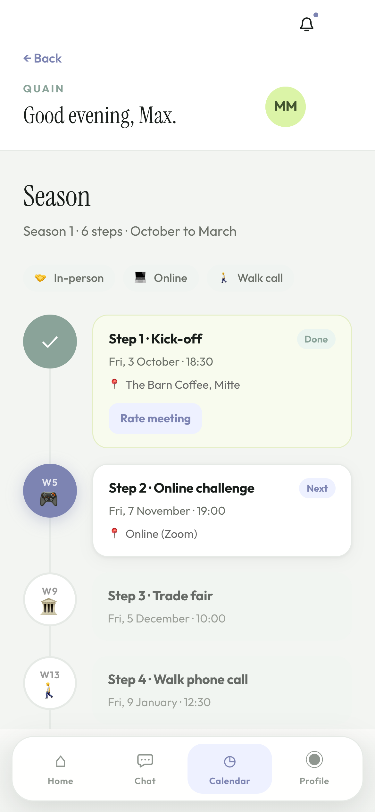
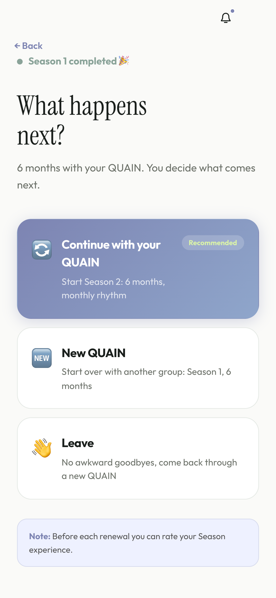
We start with private subscriptions and grow through companies that book places for their product teams.
Who pays: the user
Happy users bring QUAIN into their company.
Who pays: HR / Learning & Development
Moderated C-level peer groups have existed for decades, at C-level prices.[6, 12]
QUAIN
Not found in this combination at any of the providers examined.[23]
Planning assumption: a clear niche, large enough to grow city by city without venture capital.
567,000 × €118.80 per year (12 × €9.90) ≈ €67m per year
Assumption based on Product Focus, LinkedIn count 10/2023[9]
100,000 product roles in DE × 35 % = 35,000 × €118.80 ≈ €4.2m per year
Planning assumption: the Product Focus Survey 2026 reports 46 % senior PMs; because roles are self-assessed, we deduct about 10 percentage points[10, 11]
B2C ≈ €95,000* + B2B €165,000** (10 companies) ≈ €260k per year
* Assumption B2C: 5 cities × avg. 40 groups × avg. 4 people = 800 people × €9.90 × 12 months ≈ €95,000[10]
** Assumption B2B: 15 people × €75 × 12 months + €250 base fee × 12 months = €16,500 per company[13]
Agile roadmap: Now in the next 3 months, Next in the next 6 months, Later after that.[22]
Test the Figma Make prototype with 8 people in interviews.
KPI drop-off rate · KAN-18–22App on Supabase, Stripe for payments; iOS TestFlight and Google Play internal testing.
KPI retention rate · KAN-18–22The MVP runs on all devices and operating systems without obstacles.
KPI conversion, retention · KAN-18–24First users in Berlin: two groups and two 1:1s, via online PM communities.
KPI conversion, retention · KAN-21, KAN-22Detect problems and bugs early via Supabase and Stripe and fix them fast.
First B2B2C pilot customer, based on B2C success.
KPI conversion, revenue growth, user countAds in relevant communities, e.g. Reddit.
KPI conversion, retentionTracking events for retention, churn and rating in the dashboard.
KPI retention, churn, 5-star ratingFurther user stories from the story map
Two fictional interviews from 2036 show what has to work.[17]
Company insolvent, three conversations in one week.
Never organised anything, just showed up.
The end of the first circle didn’t hurt.
Happily paid every month for 18 Seasons.
Berlin 2027: the first group starts.
Does trust emerge that holds?
Does a fixed program fit everyday life?
Does leaving work without bad vibes?
Does the value justify the monthly fee?
Are there enough people per city?
Nine Seasons and no one I would call.
The dates were fixed, my calendar wasn’t.
Started a new Season because the others probably would.
Paying for something like friendship doesn’t fit.
Cologne 2028: the first QUAIN doesn’t start.
How do we keep interest and curiosity alive in the long run?
Are companies / HR departments willing to pay?
If so, how much?
Own artefacts with their path in the project repository, external sources also in the register quellen.md. Interview quotes translated from German.
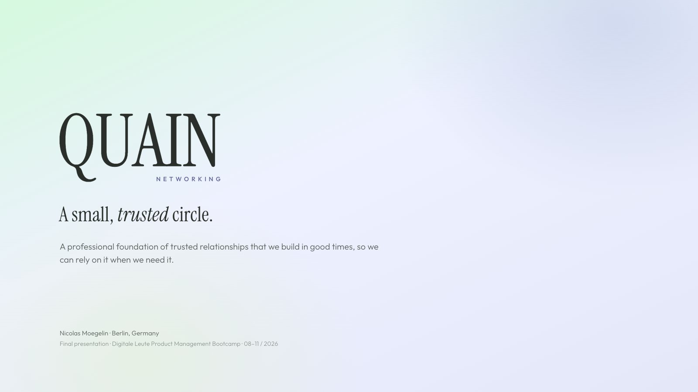
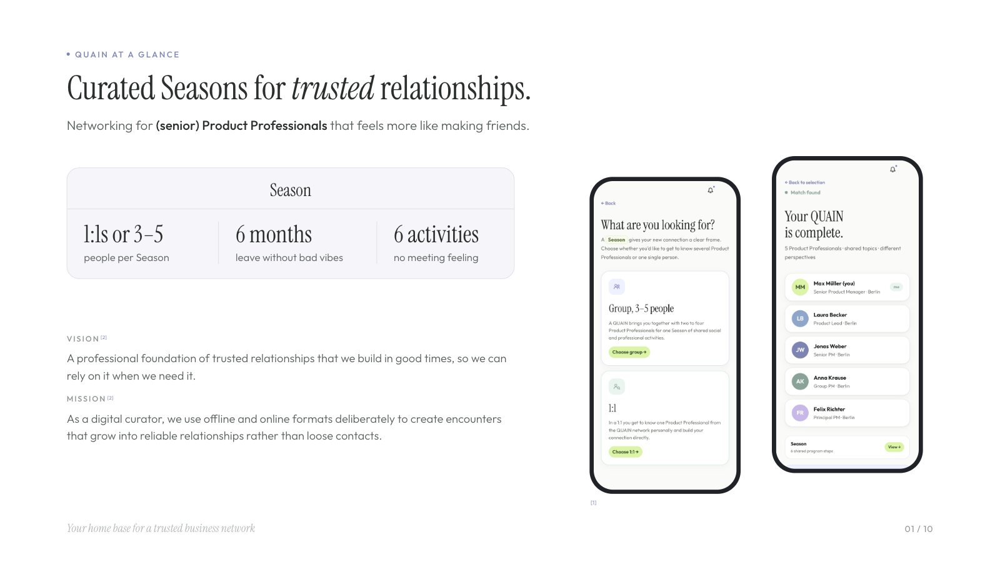
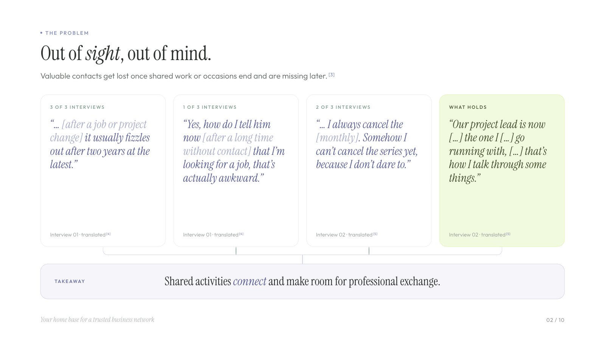
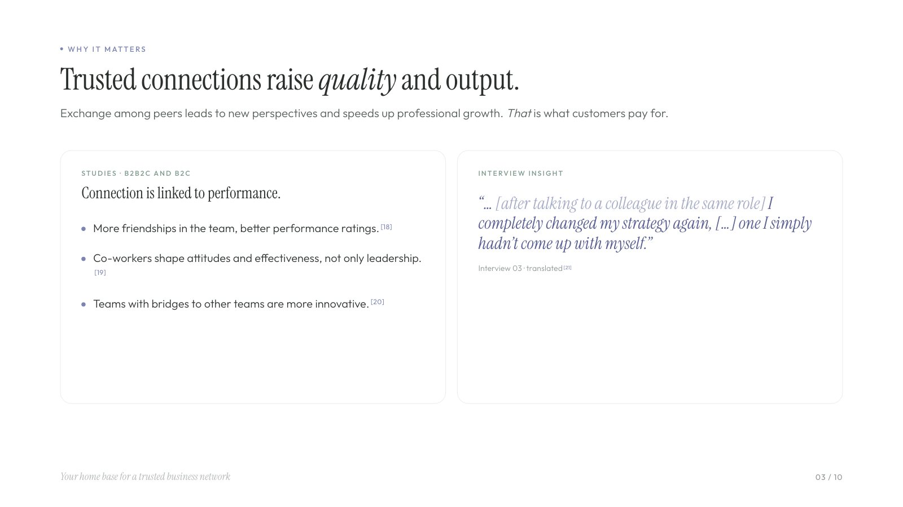
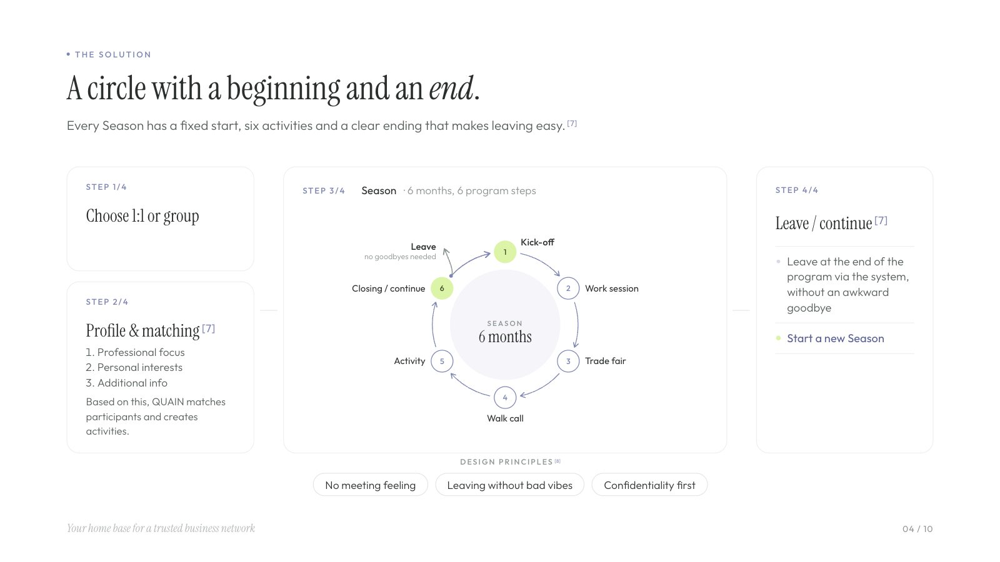
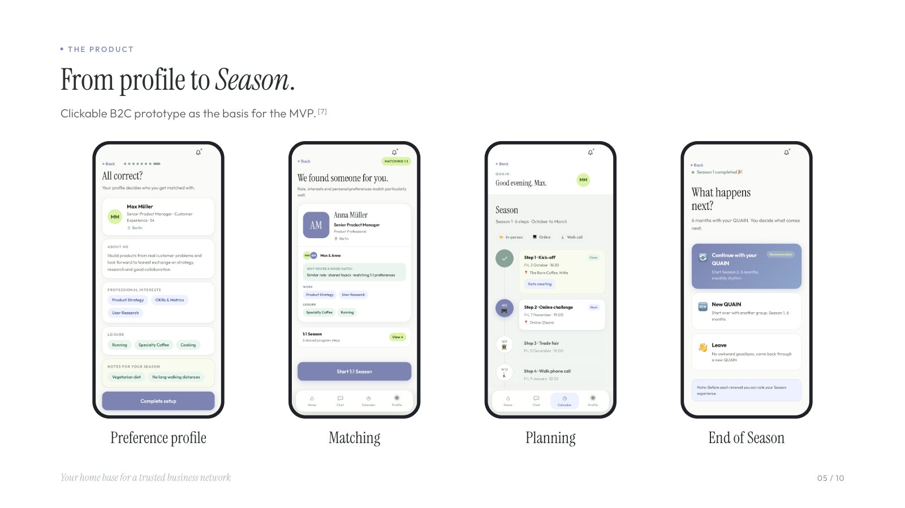
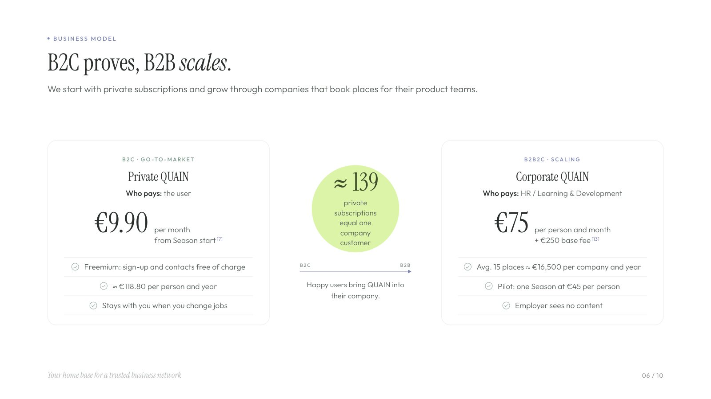
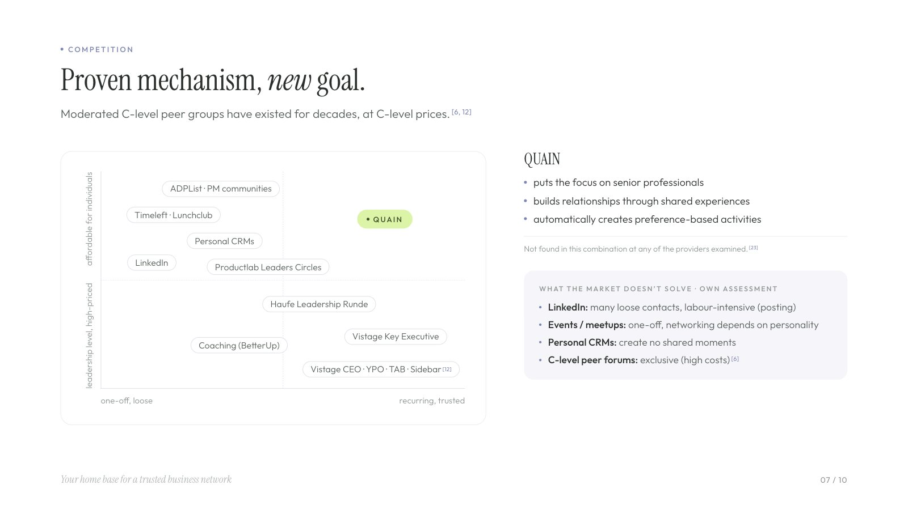
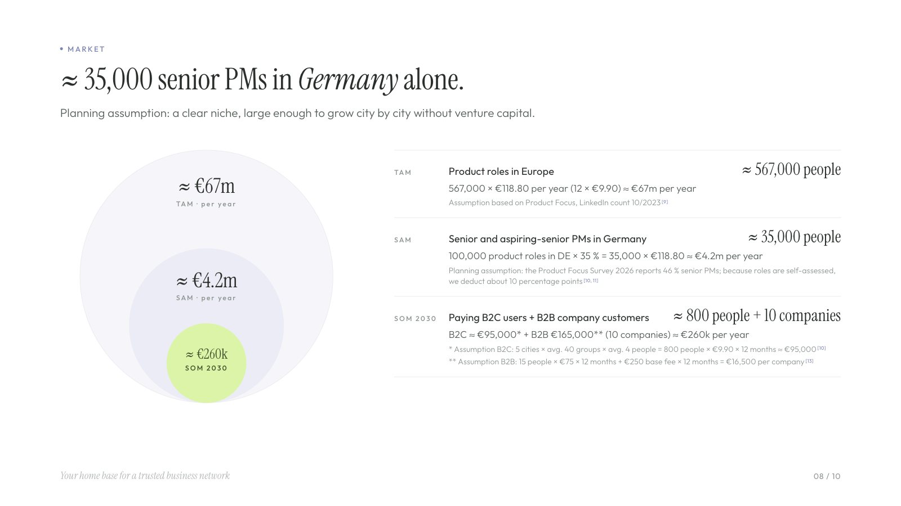
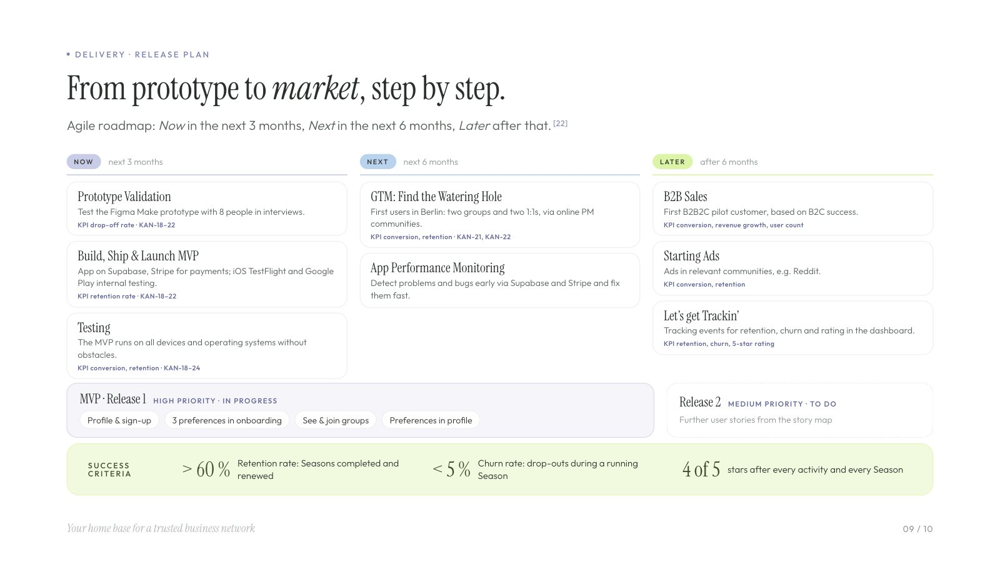
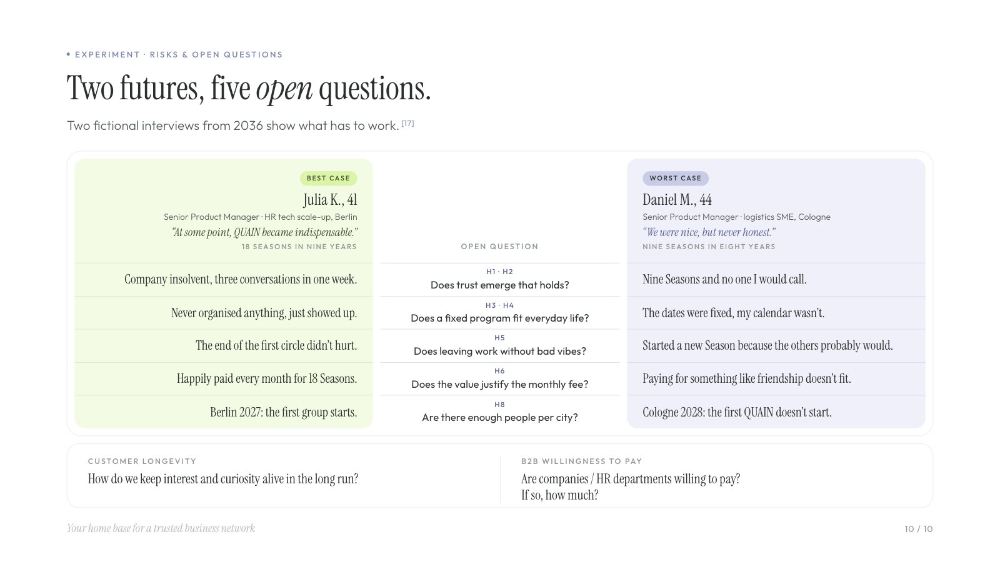
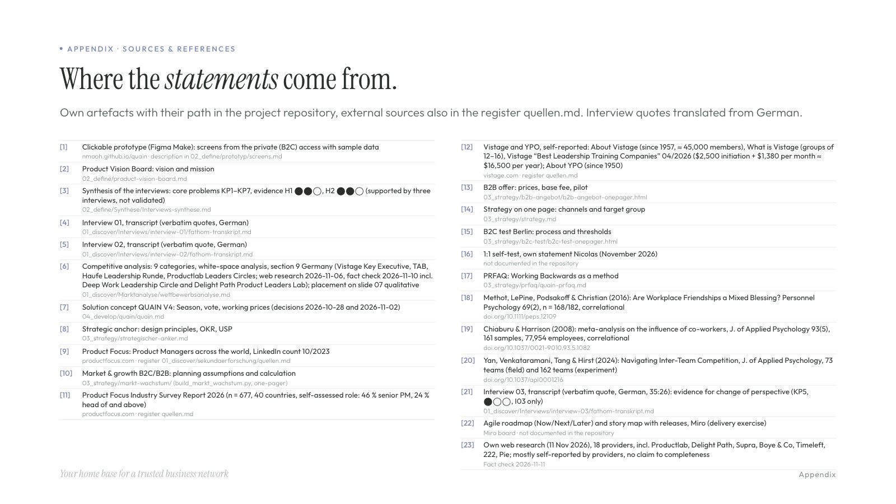